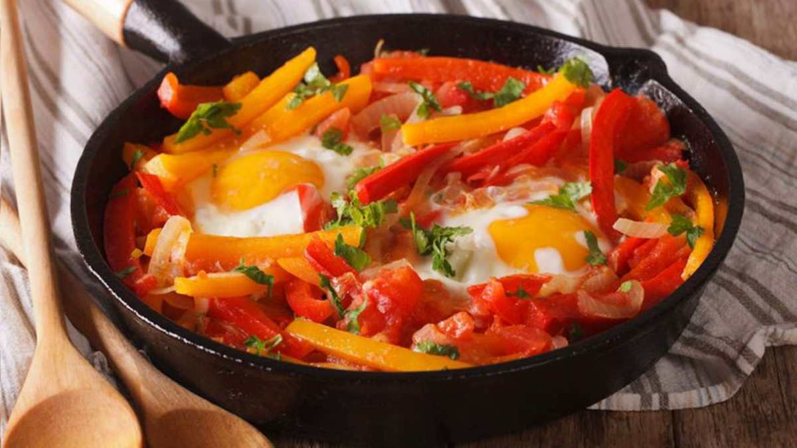

Aux délices naturelles
Resto-Afrik
Menu
Crevettes sautées aux pommes frites
Ce plat de crevettes est une spécialité des peuples de la côte du cameroun

Difficulté
Préparation
Cuisson
Temps total
Facile
10mins
25mins
35mins
Ingrédients
crevettes frais:150g
tomate:50g
oignons:10g
pommes:100g
Préparation
Découper les pommes en fines lamelles
Faire cuire les pommes à l'huile dans une poele
Faire cuire les crevettes à la poele
Mélanger la tomate aux oignons
Mélanger le tout dans la poele des crevettes